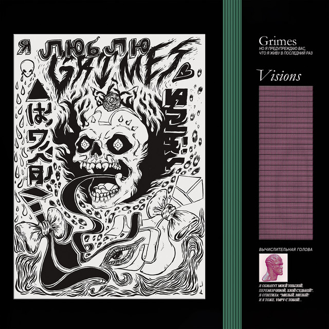

Visions
Grimes • 2012 • 13 songs, 46 min 58 sec
NOW PLAYING: —
- 1. Infinite Love without Fulfilment 1:35
- 2. Genesis 4:15
- 3. Oblivion4:11
- 4. Eight1:47
- 5. Circumambient 3:43
- 6. Vowels = space and time4:21
- 7. Visiting Statue 1:58
- 8. Be a Body 4:20
- 9. Colour of Moonlight (Antiochus)3:59
- 10. Symphonia IX (My Wait Is U) 4:52
- 11. Nightmusic 3:58
- 12. Skin 6:09
- 13. Know the Way 1:44